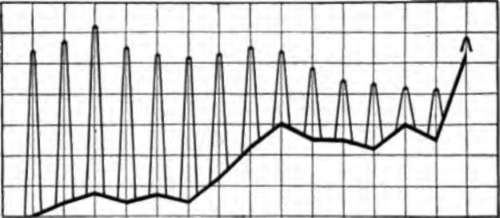

II. Results On Normal Dogs
Description
This section is from the book "The Control Of Hunger In Health And Disease", by Anton Julius Carlson. Also available from Amazon: The Control of Hunger in Health and Disease.
II. Results On Normal Dogs
No attempt was made to take continuous records of the motor activity of the empty stomach in the starving dogs. Observations were made for periods of 2 to 6 hours each day, beginning the seconder third day of starvation. The result on the five normal dogs can be seen at a glance from the following summary:
Dog I. Young Vigorous Female
Starvation Day: | |
2d day. | 10:25 a.m. to 12:00 m., continuous vigorous contractions; type II and III. |
3d day. | 2:00 to 4:00 p.m., continuous vigorous contractions, type 11 mainly. |
4th day. | 10:25 A/M- to 12:35 p.m., continuous contractions, type II mainly. |
5th day. | 1:30 to 3:30 p.m., continuous contractions, type II mainly. |
6th day. | 10:55 a.m. to 1:00 p.m., continuous contractions, type III mainly. |
7 th day. | 9:00 a.m. to 12:00 m., continuous contractions, type III mainly. |
8th day. | 9:35 to 11:35 a.m., continuous contractions, type II mainly. |
9th day. | 10:35 a.m. to 12:35 p.m. continuous contractions, type III mainly. |
10th day. | 9:35 a.m. to 3:35 p.m., very vigorous contractions, types II and III only. Tonus on the average, 12 cm. bromoform. End of experiment |
Dog II.-Young Vigorous Female | |
3rd day. | 10:00 a.m. to 3:00 p.m., strong tonus and continuous contractions of type III. |
4th day. | 10:12 a.m., strong tonus and continuous contractions of type III. |
5th day. | 1:00 to 3:00 p.m., strong tonus and continuous contractions. |
6th day. | 9:00 a.m. to 12:00 m., strong and continuous contractions. Tonus about 10 cm. bromoform. |
End of experiment | |
Dog III.-Old Female | |
2nd day. | 10:00 a.m. to i2:oom., feeble contractions, type I. |
3rd day. | 9:00 to 11:00 a.m., a few irregular contractions, type I; stomach hypotonic. |
4th day. 5th day. | 1:00 to 3:00 p.m., a few irregular contractions, type I; stomach hypotonic. 8:00 to 11:00 a.m., practically no contractions; stomach hypotonic. |
6th day. | 1:00 to 4:00 p.m., practically no contractions; stomach hypotonic. |
End of experiment | |
Dog IV.-Young Vigorous Female | |
3d day. | 9:30 to 11:30 a.m., strong tonus, continuous contractions, types II and III. |
4th day. | 1:00 to 3:00 p.m., fairly strong tonus, types I and II contractions. |
5th day. | 8:00 to 11:00 a.m., strong tonus, types II and III contractions. |
7 th day. | 9:40 a.m. to 12:00 m., fairly strong tonus, type III contractions. |
8th day. | 1:00 to 3:00 p.m., very strong tonus, type III contractions. |
9th day. 8:00 to 10:00 a.m., feeble tonus, feeble contractions, type II. 10th day. 8:00 to 11 :oo a.m., fairly strong tonus; fairly strong type JJ contractions.
End of experiment
Dog. V.-Six-Months-Old Female
2d day. Fast 30 hours; type II contractions; tonus 3 to 4 cm. Chloroform.
3d day. Type II contractions; tonus 3 to 4$ cm.
4th day. Type II contractions; tonus 3 to 4} cm.
5th day. Type II contractions; tonus 3 to 4J cm.
6th day. Types II and III contractions; tonus 3 to 4} cm.
7th day. Types II and III contractions; tonus 3 to 4$ cm.
8th day. Types II and III contractions; tonus 3 to si cm.
9th day. Types II and III contractions; tonus 3 to 6J cm.
10th day. Type HI contractions; tonus 3 to 7 cm.
nth day. Type III contractions; tonus 3 to 6J cm.
12th day. Type III contractions; tonus 3 to 6$ cm.
13th day. Type III contractions; tonus 3 to 61 cm.
14th day. Type II and prolonged type III contractions; tonus 3 to 7 cm.
15th day. Type III contractions; tonus 3 to 6J cm.
16th day. Six hours before death from starvation; type II and prolonged type III contractions; tonus 3 to 9I cm. .
Dogs I, II, and IV exhibited either normal or greater than normal hunger contractions of the empty stomach during the entire starvation period. The increased tonus of the stomach was particularly marked. In consequence of this increased tonus the types of hunger contractions were usually those previously described as II and III, that is, practically incomplete tetanus. Judging from observations on man, the dogs probably felt continuous and intense hunger during these contractions.
The only old dog in this series, No. Ill, had shown rather feeble and irregular gastric hunger contractions before the starvation period. The reason for this was not apparent. The dog was in good condition and would eat greedily, even when the empty stomach was practically quiescent and distinctly hypotonic. This dog showed virtually no gastric hunger contractions after the third day of starvation, and the stomach appeared distinctly hypotonic. The dog was eager for food, however.
The stomach of the dogs showed acid reaction throughout the hunger period, just as was the case with the stomachs of the starving men.
It will thus be seen that the empty stomach of men and dogs exhibits ordinarily either normal or greater than normal hunger contractions during starvation periods of from 5 to 15 days.
The cause of this increased hunger activity of the stomach may be: (1) an increase in the tonus innervation via the vagi; (2) changes in the blood in consequence of starvation; (3) starvation metabolism of the motor tissues of the stomach itself.
Fig. 16.-Diagrammatic representation of the amplitude of a gastric hunger contraction on the base of the rising tonus as constructed from the daily tracings during starvation of a young dog. Each of the above squares represents 1 sq. cm. The erect pyramids indicate the amplitudes of the hunger contractions in centimeters arranged on the rising tonus as a base line. Spaces left to right indicate number of days of starvation; spaces from bottom to top daily increase in the gastric tonus in centimeters. Note the rapid increase in gastric tonus and decline in amplitude of contractions on the 15th day as produced by the prolonged type III hunger contractions (Patterson).
Continue to:
- prev: 2. The Subjective Phenomena
- Table of Contents
- next: III. Experiments On Dogs With The Stomach Isolated From The Central Nervous System